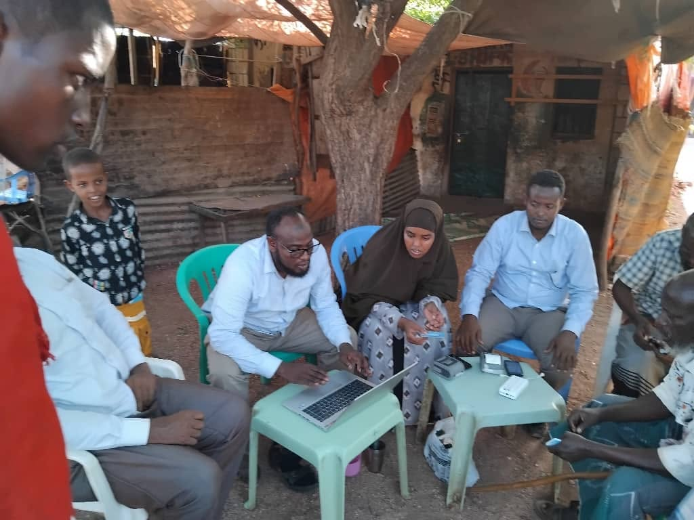
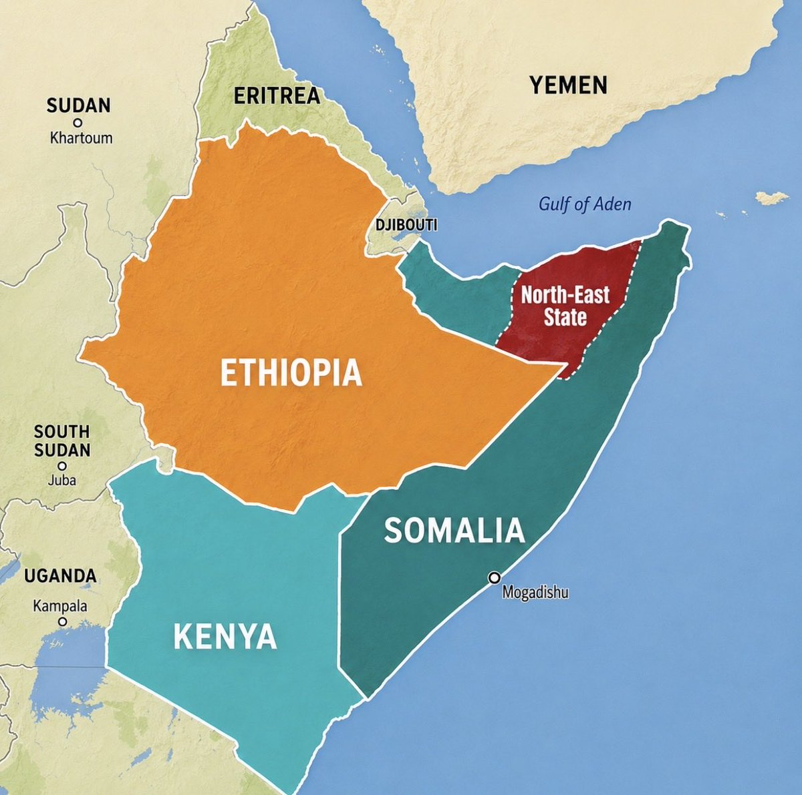
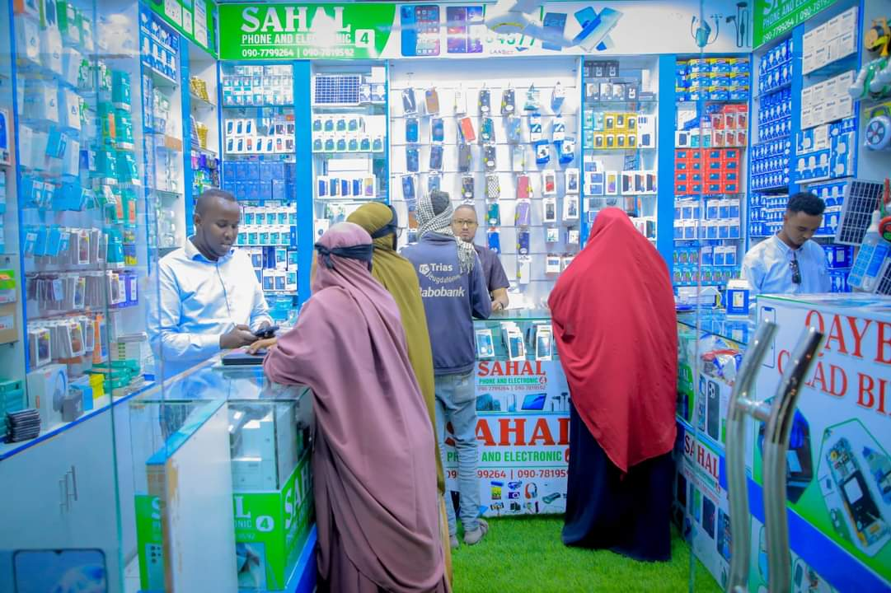

September 16, 2026
Two Words from Washington
At the Hudson Institute the North Eastern State was waved off as a formality and 2023 was called a conflict. Both words deserve an answer.
September 16, 2026
The Debt No One Carries Alone
The mag, or diya, system spreads the cost of harm across a whole kin group. Social insurance, built by nomads long before the term existed in any funding proposal.

September 14, 2026
New Canadian Life: Fifty Episodes on the Air
Fifty-plus episodes of the CultureLink radio show I co-hosted with Glen on Met Radio 1280 AM, now archived here in full.

September 13, 2026
The $852 Million Question
This year's appeal measures the outside money that is missing, never the local capacity that was already there and unfunded.

August 27, 2026
When the Money Stops: What Las'anod Is Proving While AUSSOM Funding Dries Up
As U.S. funding for AUSSOM ends, Las'anod's self-driven rebuild shows what real ownership actually looks like.

August 15, 2026
A Personal Moment Ahead of a Landmark Visit: Meeting DSRSG George Conway
A conversation with the UN's senior humanitarian official for Somalia in Jowhar, ahead of his expected first visit to Laascaanood and the Northeastern State.

August 15, 2026
Our New Direction: The X Factor
On charting our own direction: from the frontier near Buuhoodle to the port at Laas Qoray.

August 14, 2026
What One Building Can Carry
On the Cali Barre Mosque rising over Laascaanood, and what a single building can mean for a region still rebuilding.

Welcome to the journal
Why I'm starting this, and what to expect here.

On local ownership and development
A first sketch of an argument I keep coming back to: why development led from outside rarely outlasts the funding.

From the archive
khatumo.net, 2012–2015
Before this journal there was a publication. 132 entries recovered from the Internet Archive, covering the formation of Khaatumo State, the Somaliland question, and the contested territories around Las Anod and Buhodle — reproduced as originally published.
Browse the archive →